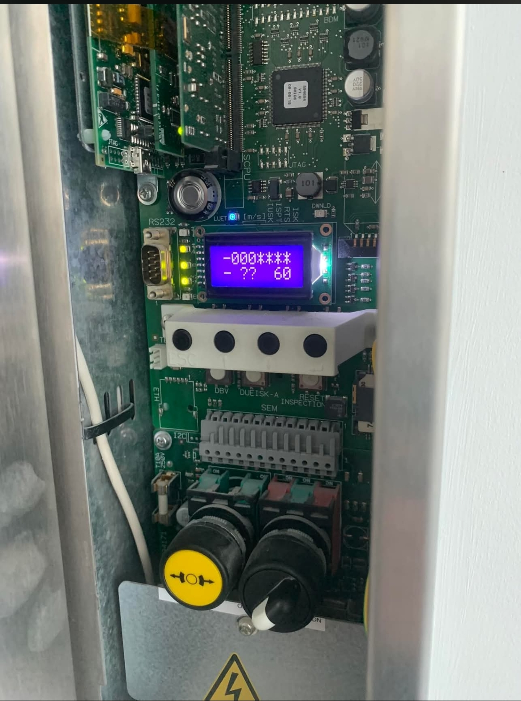

• Gama de Funcionamento: A alimentação deste circuito estabiliza entre os 24Vdc e os 55Vdc dependendo do estado lógico da manobra.
• Monitorização de Cintas: O circuito inicia obrigatoriamente na ficha KSS. Falhas no circuito de monitorização do estado ou alongamento das cintas cortam a alimentação imediatamente aqui.
• AVISO DE SEGURANÇA: Nunca efetue shunts intermédios ou pontes nas fichas eletrónicas. Risco severo de destruição de componentes da placa principal e anulação de seguranças.
| Componente Técnico / Circuito | Ficha / Pinos de Teste |
|---|---|
|
Mecânica Tração 1º Circuito: Monitorização de Cintas Contacto mecânico de monitorização/alongamento das cintas de tração |
KSS P1 ➔ KSS P2
|
|
Gerais Caixa 2º Circuito: Dispositivos de Poço Contacto da escada de acesso ao poço, roda tensora do limitador e STOP de poço |
SKS P1 ➔ SKS P2
|
|
Portas / Trincos 3º Circuito: Série de Portas de Piso Contactos elétricos de fecho/presença das portas exteriores de piso |
SKS P2 ➔ SKS P3
|
|
Gerais Cabine 4º Circuito: Série Geral de Cabine e Limites Encravamento das portas de cabine, contacto de segurança do bloqueio de cabine, stop de revisão, páraquedas e fins de curso |
SKC L1 ➔ SKC L4
|
|
Gerais Caixa 5º Circuito: Limitador de Velocidade Contacto mecânico de corte do limitador de velocidade (LV) |
KBV P1 ➔ KBV P2
|